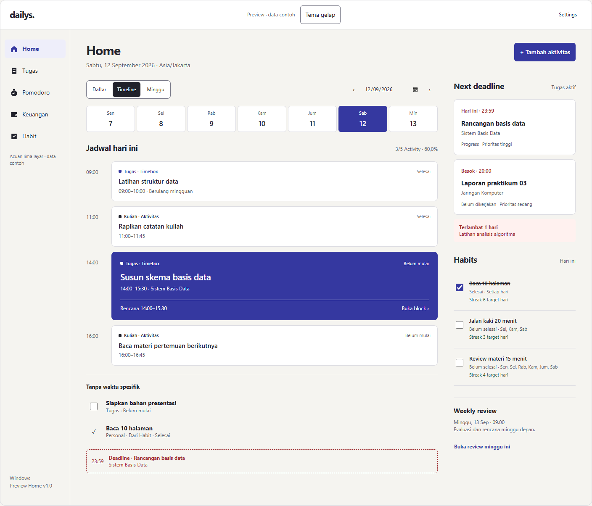
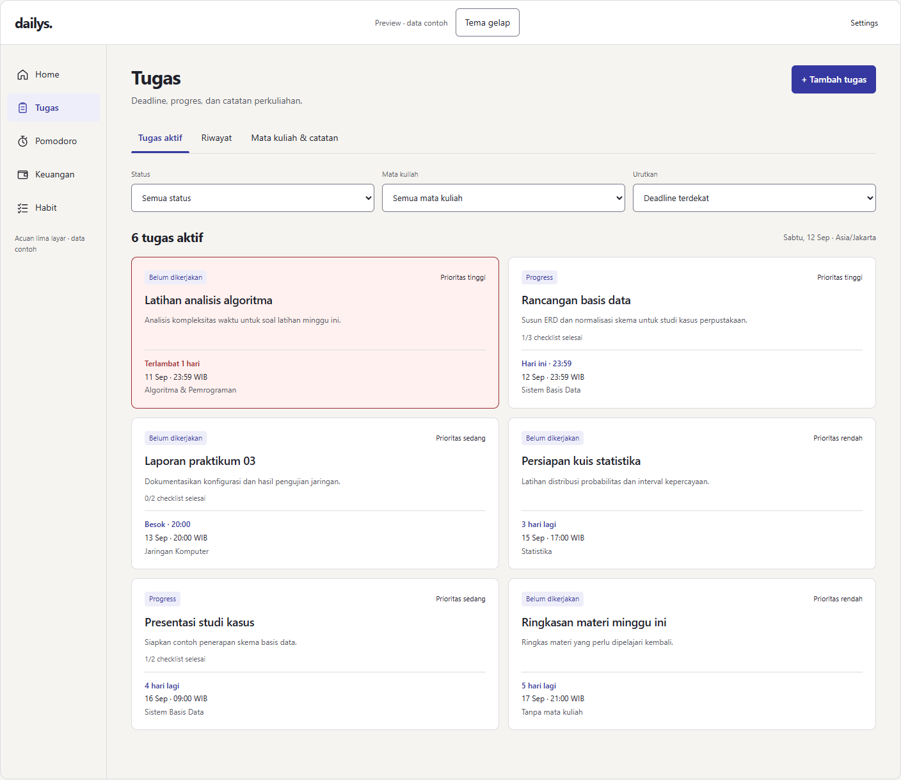
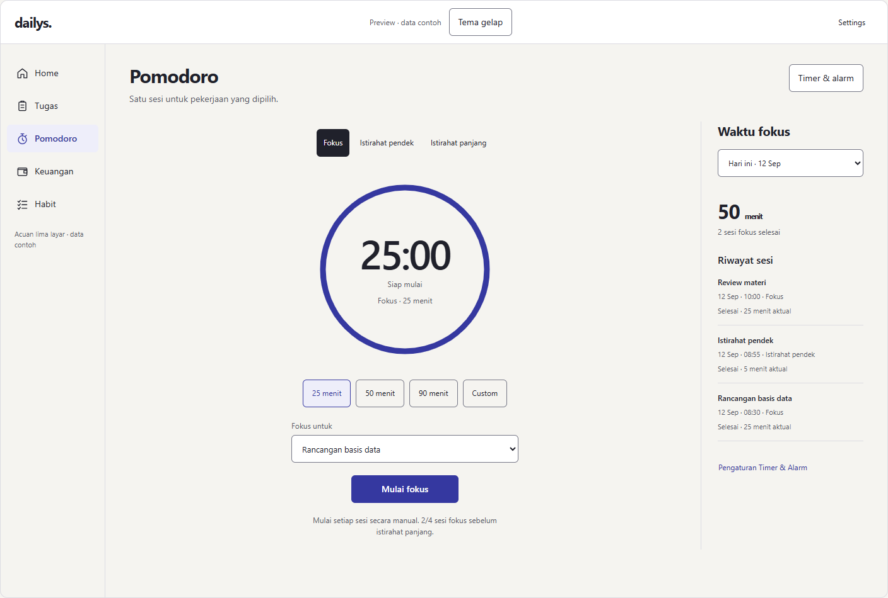
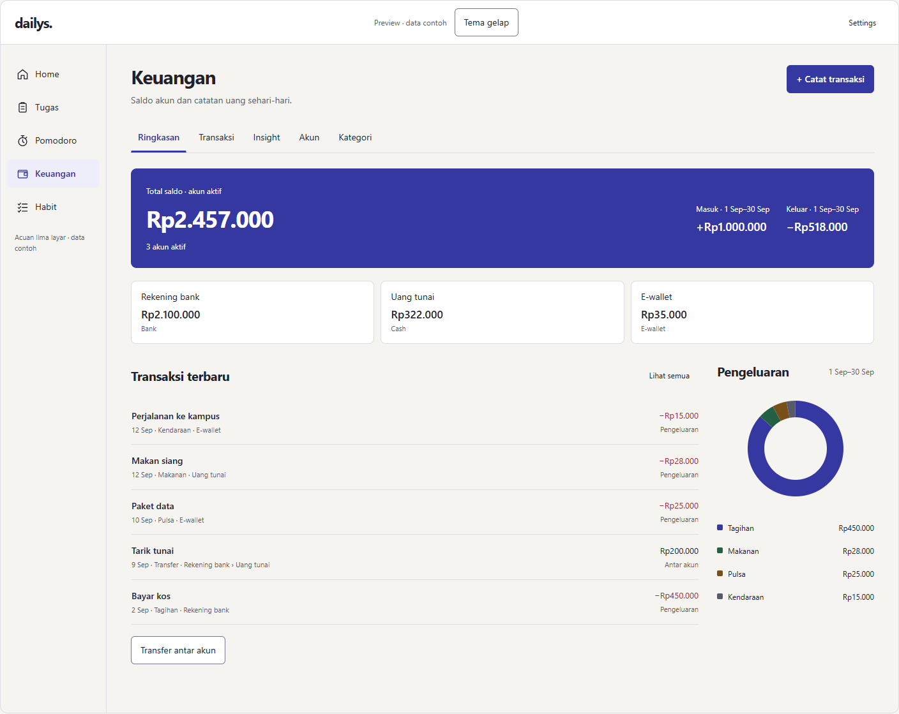
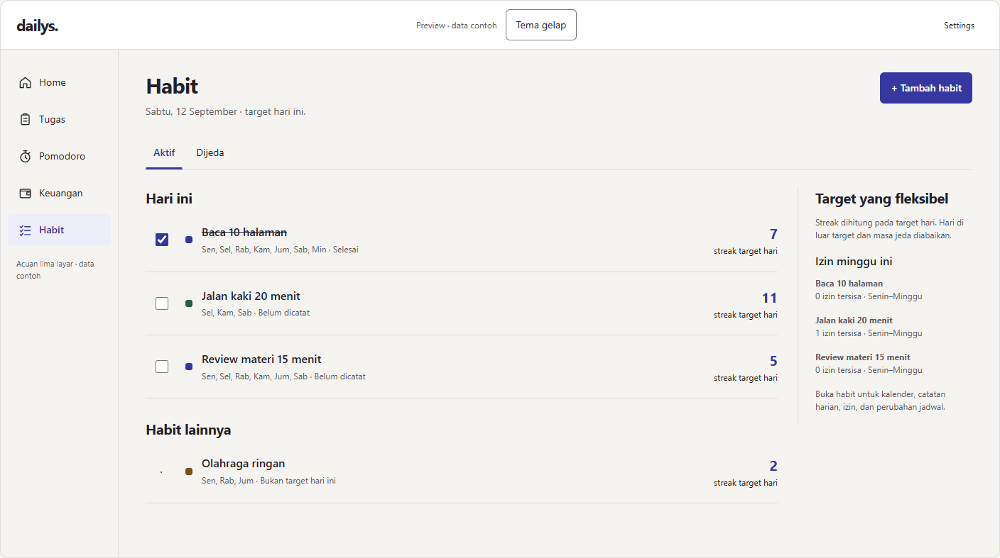
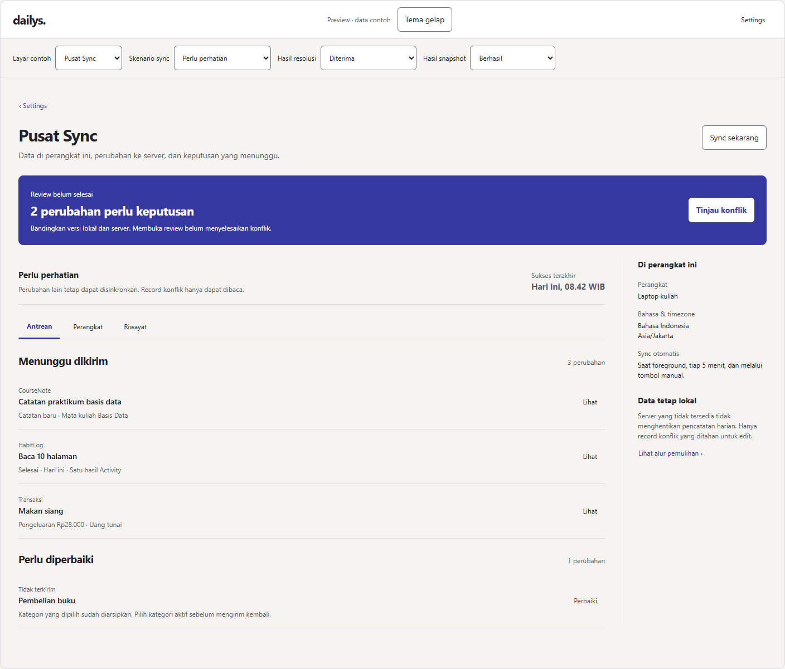
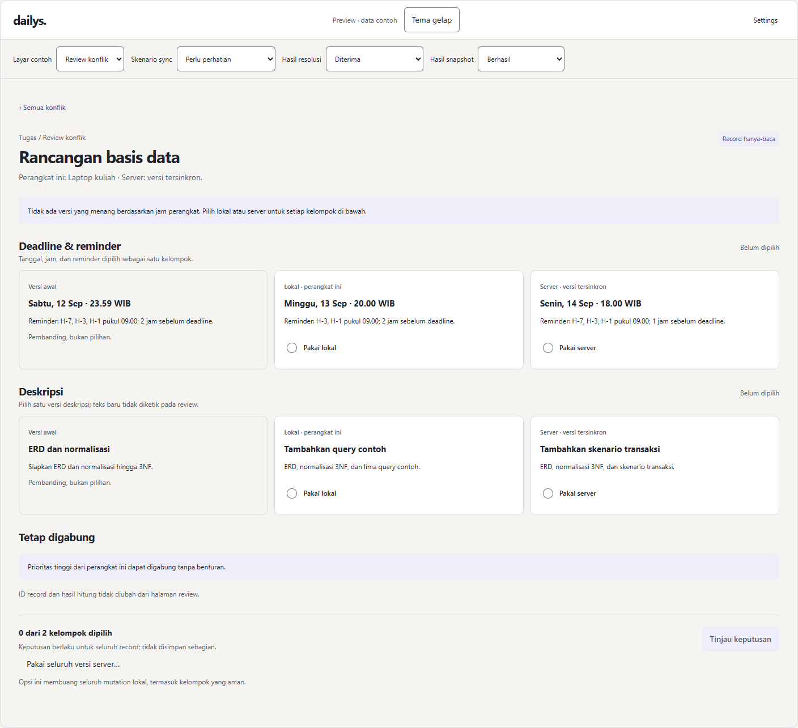
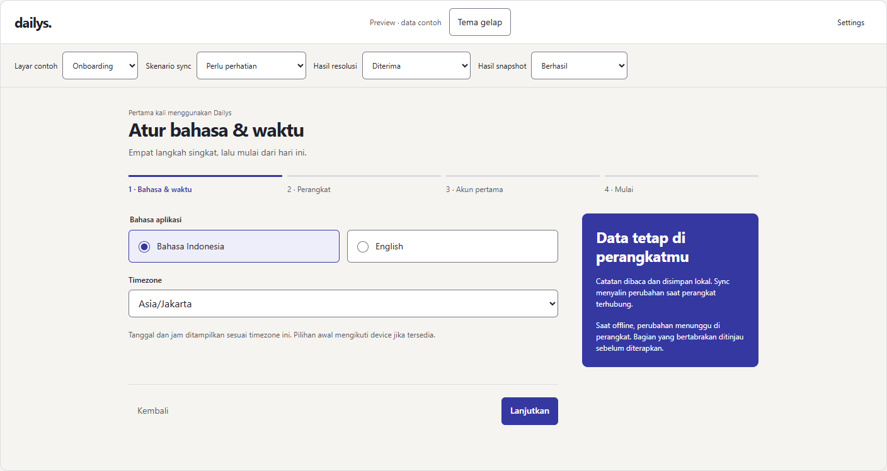
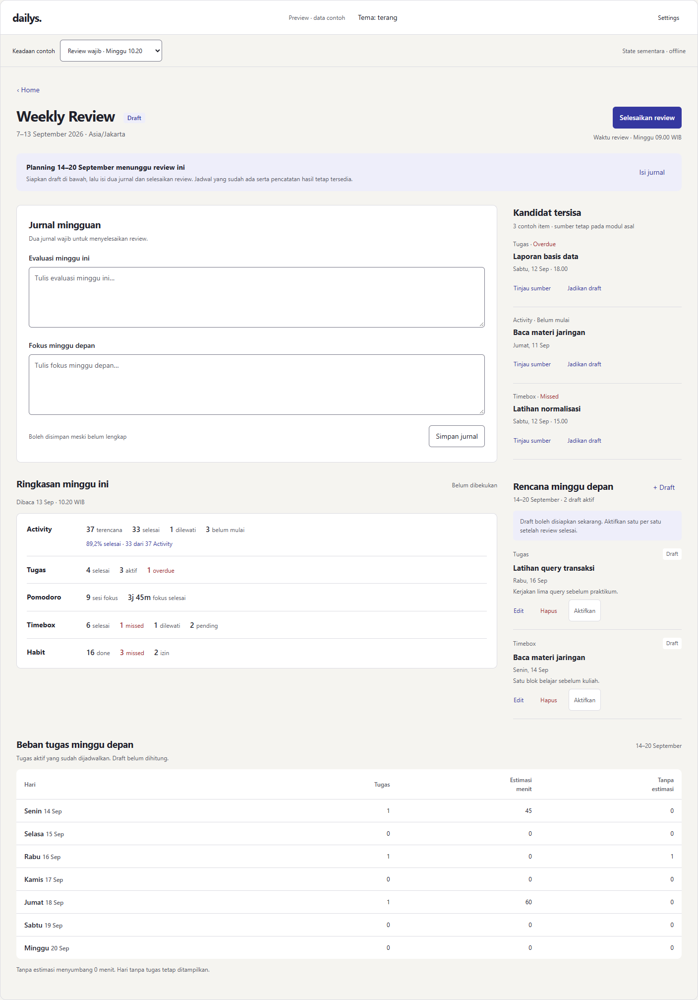
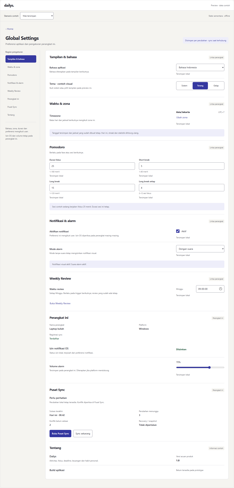

Home
Activity dan Timebox, Next deadline, Habits, dan akses Weekly Review.
Home, Tugas, Pomodoro, Keuangan, Habit; ditambah Global Settings, Pusat Sync, review konflik, onboarding, dan Weekly Review. Alur global bukan tab utama tambahan. Buka preview untuk mencoba tema, form, dan keadaan data.

Activity dan Timebox, Next deadline, Habits, dan akses Weekly Review.

Deadline aktif, detail/checklist, riwayat mingguan, mata kuliah dan CourseNote.

Timer fokus dan break, link pekerjaan, durasi aktual, statistik dan riwayat.

Saldo, ledger, transfer, akun, kategori dan insight arus kas.

Target hari, checklist, streak, heatmap, izin dan jadwal efektif.

Status lokal, antrean, registrasi, error sync dan alur salinan/snapshot/recovery.

Versi awal/lokal/server, pilihan kelompok atomik, dampak saldo dan hasil resolusi.

Bahasa, timezone, perangkat, registrasi/offline dan akun keuangan pertama opsional.

Dua jurnal, ringkasan live/snapshot, kandidat, draft/promotion dan beban tujuh hari.

Bahasa, timezone, Pomodoro, notifikasi, preferensi perangkat dan akses alur global.
{kind=link}
{kind=link}
{kind=link}
{kind=link}
{kind=link}
{kind=link}
{kind=link}
{kind=link}
{kind=link}
{kind=link}